February 1 - 3, 2013
| In early February, I was blessed to be able to
spend a weekend with Dan & Rose Casazza at their place near South
Padre Island. This trip came at a very sad time in my life. A
getaway like this was exactly what I needed. We had a great time
visiting, reading, eating, and eating. Never a hungry
moment! J |
|
| 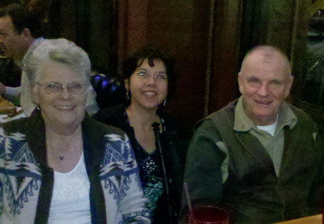 |
Our first evening together on Friday night |
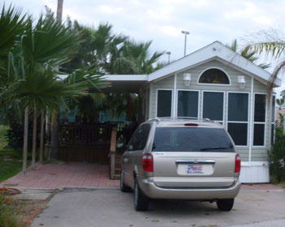 |
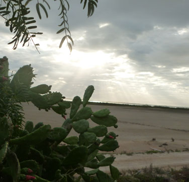 |
| Casa de Casazza | Watching the sun break through early Saturday morning |
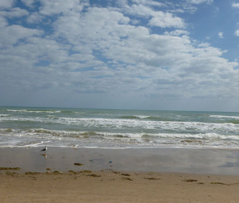 |
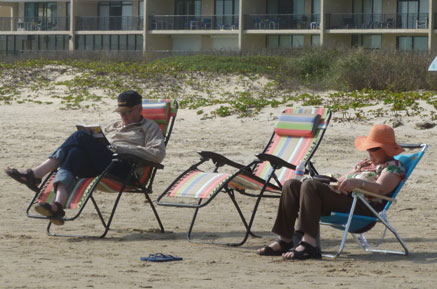 |
| They took me to the beach so I could walk and walk - it was great | Dan and Rose, waiting patiently for me to walk myself out |
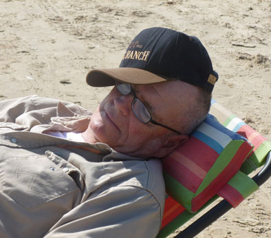 |
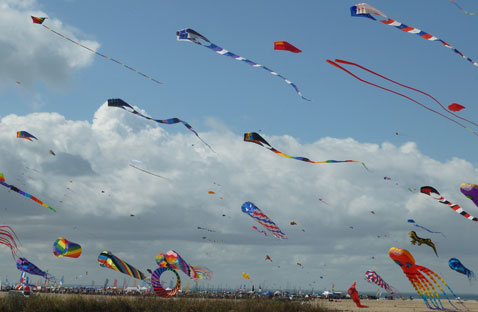 |
| Dan, waiting VERY patiently. | Next we took a drive around the island and discovered this amazing kite festival. |
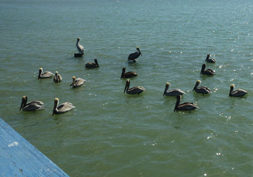 |
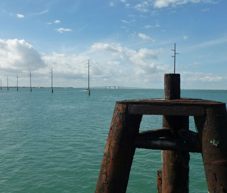 |
| Time for lunch - these guys hang out near the restaurant | The restaurant is built on a pier so there isn't a bad seat in the house. I took these two shots from the end of the pier when Dan & I walked out there after lunch. |
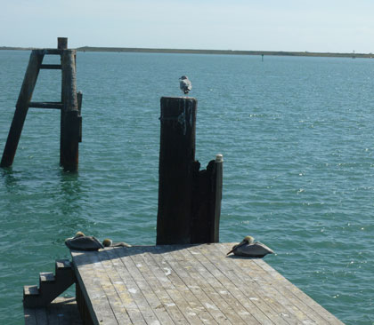 |
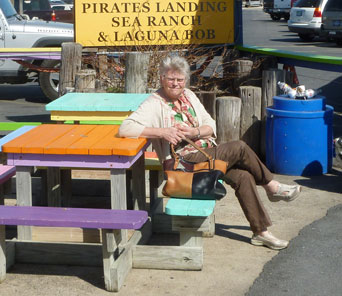 |
| Another end-of-the-pier shot. | Rose, looking pretty while she waits for us to return |
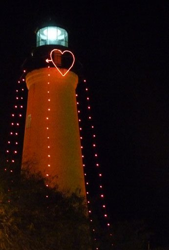 |
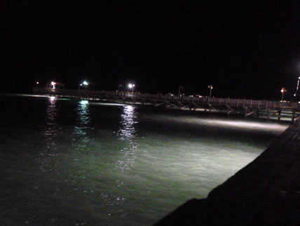 |
| Another evening walk included the Port Isabel lighthouse | Also the fishing pier, it was a very nice evening. We had great
weather all weekend. It was a very good trip! |